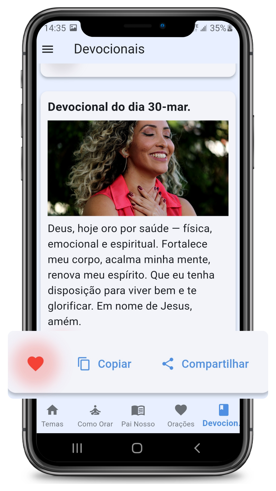

Baixar na Play Store
Baixar na Play Store
Orações diárias
Acesse orações organizadas para começar o dia com serenidade, intenção e fé.
Orações por categorias, devocionais diários e leitura confortável em uma experiência simples, acolhedora e alinhada ao seu momento com Deus.
Encontre orações, devocionais e conteúdos espirituais em um aplicativo pensado para facilitar sua rotina de fé.
Acesse orações organizadas para começar o dia com serenidade, intenção e fé.
Conteúdos curtos e edificantes para fortalecer sua rotina espiritual sem tornar o dia pesado.
Leitura confortável e navegação fácil para encontrar rapidamente o conteúdo que você procura.
Escolha o conteúdo ideal para cada momento: gratidão, paz, direção, esperança e fortalecimento da fé.
Abra o app em poucos segundos e tenha um momento de oração e reflexão onde estiver.
Compartilhe orações e mensagens inspiradoras com amigos e familiares com facilidade.
Explore orações, reflexões e conteúdos devocionais em uma interface leve, organizada e agradável para o dia a dia.
Acesse rapidamente orações e conteúdos espirituais organizados de forma clara.

Leia com conforto em uma tela pensada para concentração, paz e reflexão.
Tenha conteúdos diários para fortalecer sua fé e manter sua rotina espiritual.
Entre rapidamente e encontre uma interface pronta para seu momento de oração e reflexão.
Selecione orações, devocionais ou leituras espirituais de forma simples e organizada.
Dedique alguns minutos à oração diária e leve mais paz, inspiração e propósito para sua rotina.
Ideal para quem deseja manter uma rotina espiritual leve, bonita, constante e acessível no celular.
Sim. O aplicativo pode ser utilizado gratuitamente e exibe anúncios para manter o conteúdo acessível. Também existe a opção premium para remover anúncios e ter uma experiência ainda mais tranquila.
Não. Grande parte do conteúdo já fica disponível no próprio aplicativo, permitindo acesso mesmo sem conexão. Algumas funcionalidades podem exigir internet, mas a experiência principal foi pensada para funcionar offline.
As orações são organizadas de forma clara em categorias, facilitando encontrar rapidamente o conteúdo ideal para cada momento, seja para agradecer, pedir orientação ou fortalecer a fé.
Os devocionais são conteúdos preparados para acompanhar sua rotina espiritual, trazendo reflexões e mensagens que ajudam a manter um momento diário de conexão com Deus.
Sim. A interface foi pensada para ser simples, intuitiva e leve, permitindo que qualquer pessoa navegue facilmente entre os conteúdos sem complicações.
Sim. Você pode compartilhar orações e devocionais com amigos e familiares, levando mensagens de fé e inspiração para outras pessoas.